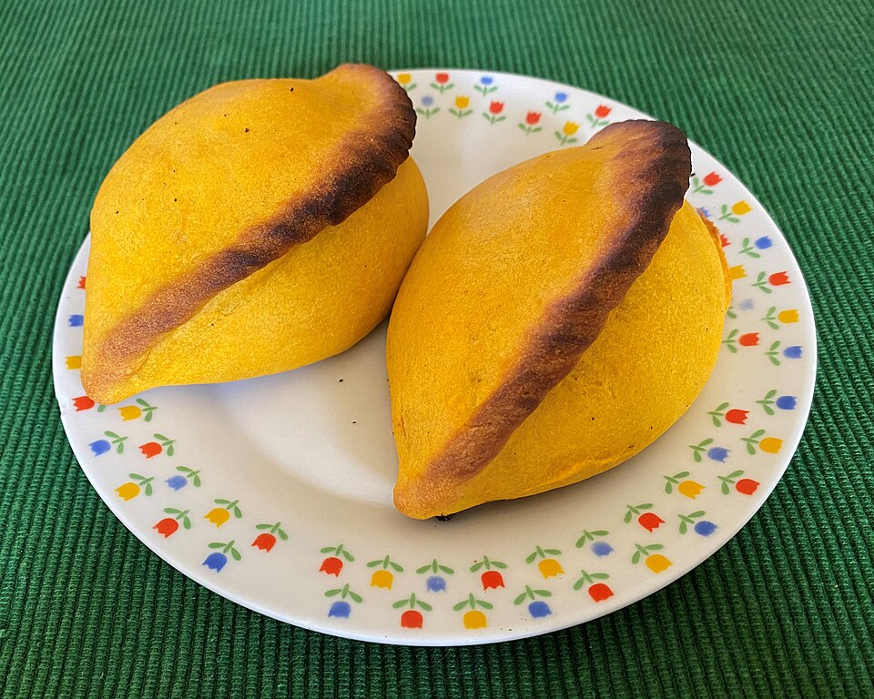
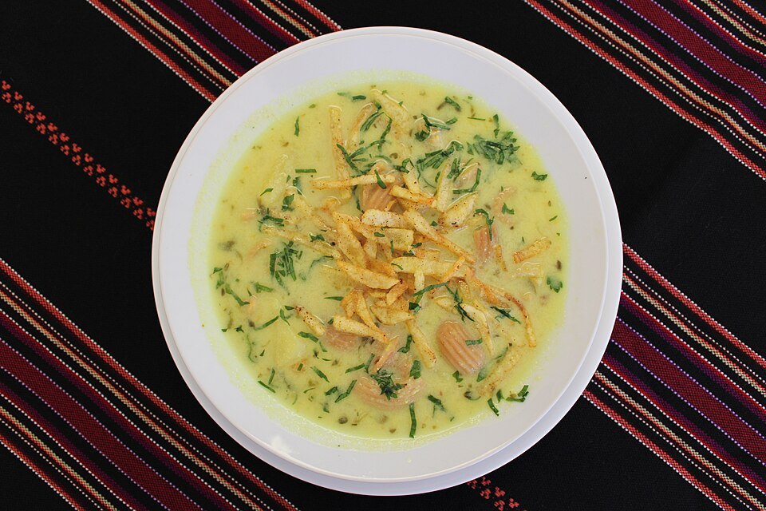
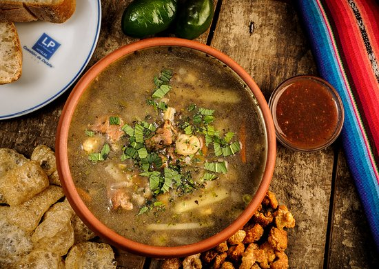
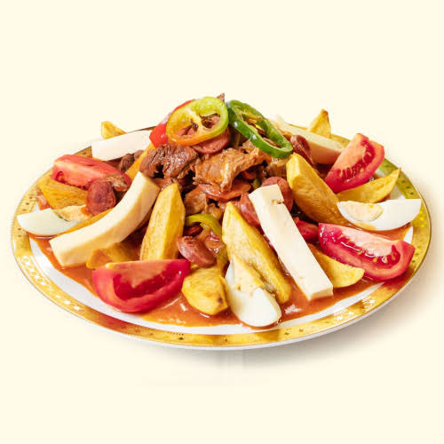
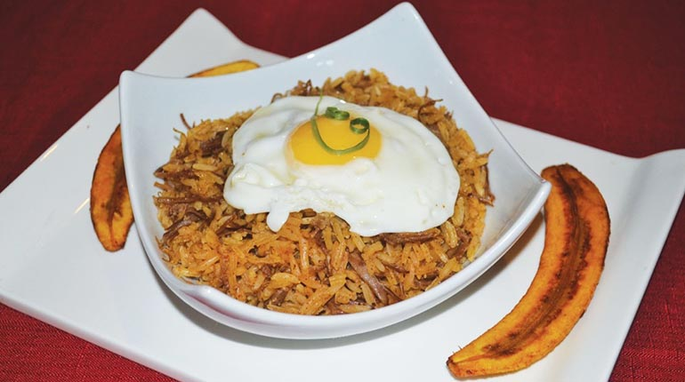
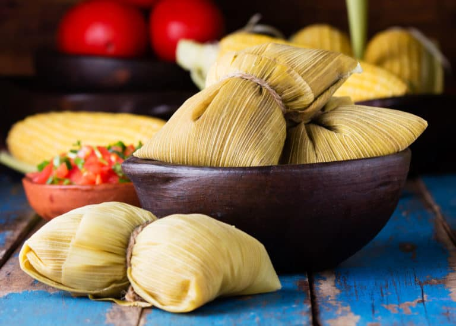
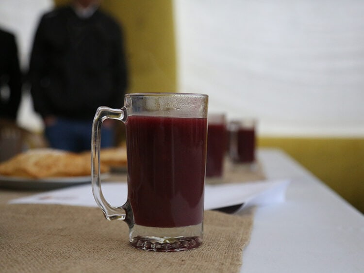

Tradición
Salteña
Empanada horneada con relleno jugoso de carne o pollo, papa, verduras y condimentos. Es muy popular como desayuno o merienda.
Conoce los sabores de nuestro país, sus platos típicos, recetas tradicionales y la importancia de conservar nuestra herencia gastronómica para las futuras generaciones.
Descubrir nuestros platosLa gastronomía de Bolivia es muy variada porque cada región tiene sus propios ingredientes, costumbres y formas de cocinar. Sus platos representan la historia y la identidad de nuestro pueblo.
En el altiplano se utilizan productos como la papa, el chuño y la quinua. En los valles destacan el maíz y las verduras, mientras que en el oriente se aprovechan la yuca, el plátano y otros productos tropicales.

Cada departamento tiene preparaciones especiales que representan su cultura y sus ingredientes tradicionales.

Empanada horneada con relleno jugoso de carne o pollo, papa, verduras y condimentos. Es muy popular como desayuno o merienda.

Sopa tradicional preparada con ingredientes como chuño, papa, verduras, hierbas y carne, según la receta regional.

Plato abundante que combina carne, salchicha, papa frita, cebolla y locoto. Se comparte en reuniones familiares.

Preparación oriental que suele llevar arroz, charque o carne y acompañamientos como huevo y plátano frito.

Preparación a base de choclo que puede ser dulce o salada. Se cocina al horno o al vapor, según la costumbre regional.

Bebida caliente preparada con maíz morado, especias y azúcar. Es especialmente apreciada durante las mañanas frías.
Estas recetas sencillas nos ayudan a conocer algunos sabores de Bolivia y a transmitirlos a otras generaciones.
Preservar la gastronomía significa proteger las recetas, los ingredientes y los conocimientos que forman parte de nuestra identidad cultural.
Preguntar a nuestros abuelos y padres cómo preparan las comidas tradicionales.
Escribir los ingredientes y pasos de preparación para que no se pierdan con el tiempo.
Organizar ferias gastronómicas y actividades escolares para dar a conocer nuestros platos.
Valorar los productos nacionales y el trabajo de agricultores y vendedores locales.
Crear páginas web, fotografías y recetarios digitales para compartir los conocimientos gastronómicos.
Motivar a los estudiantes a conocer, preparar y valorar los platos típicos de sus regiones.
Como estudiantes, podemos contribuir a preservar la gastronomía boliviana investigando, aprendiendo de nuestras familias y compartiendo información mediante esta página web. De esta manera ayudamos a que las futuras generaciones conozcan y valoren nuestra riqueza cultural.
Volver al inicio ↑